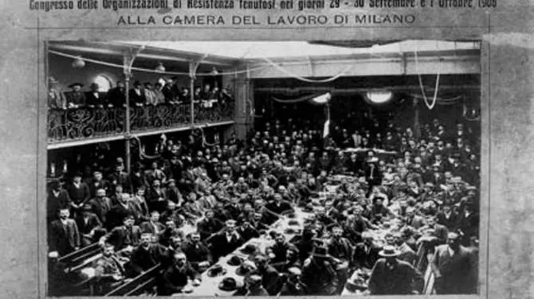
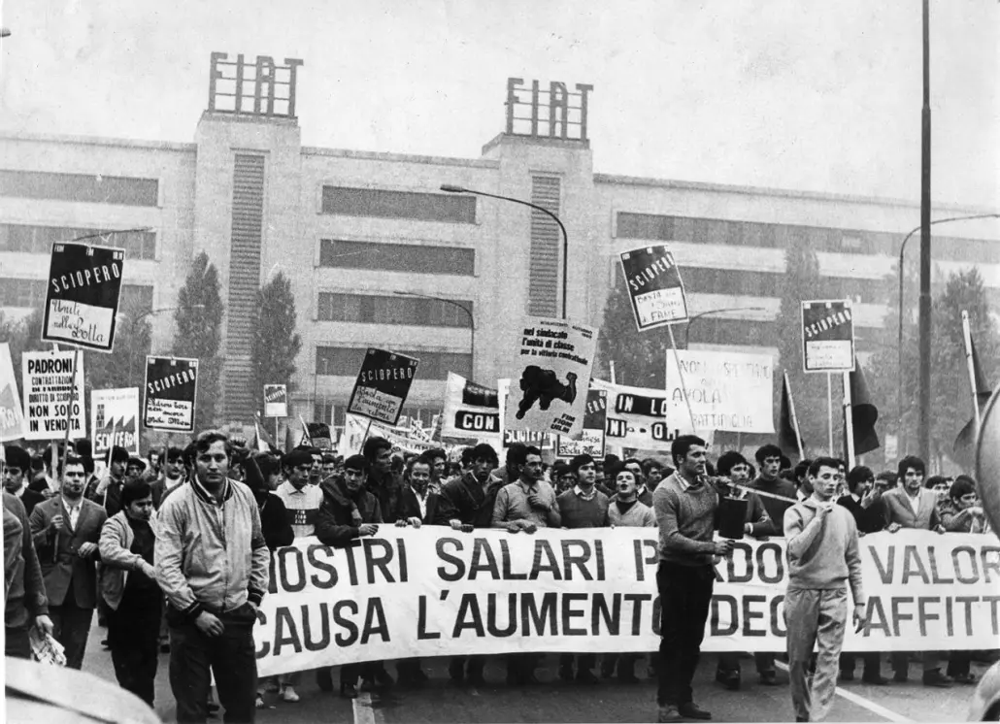

Il sindacato che vorremmo
-
La nascita
Camera del Lavoro di Milano
Prima riunione e fondazione della CGL, nasce il sindacato.
 -
FLM
Sede FLM Roma
Nasce la Federazione unitaria Cgil, Cisl, Uil.

-
Lotta operaia
Sciopero per il salario
Sciopero fatto davanti allo stabilimento Fiat di Mirafiori Torino.
 -
Sai cos'è il sindacato?
No, ma vi spieghiamo cosa vorremmo

-
Cosa deve fare il sindacato per avvicinare i giovani?
Le nostre idee
Il coinvolgimento dei giovani nel sindacato può essere promosso attraverso diverse strategie che tengono conto delle loro esigenze, interessi e modi di comunicare. Ecco alcune possibili azioni che il sindacato può adottare per avvicinare i giovani:
Comunicazione efficace: Utilizzare i canali di comunicazione preferiti dai giovani, come i social media, per diffondere informazioni e coinvolgerli. Creare contenuti pertinenti e accessibili, utilizzando linguaggio chiaro e evitando eccessiva burocrazia.
Partecipazione attiva: Organizzare eventi e iniziative coinvolgenti, come workshop, webinar o dibattiti su temi che interessano i giovani. Coinvolgere i giovani nelle decisioni sindacali e fornire spazi per le loro opinioni e proposte.
Supporto per le nuove generazioni: Offrire servizi e risorse che rispondano alle esigenze specifiche dei giovani lavoratori, come consulenze legali, formazione professionale o assistenza nella ricerca di lavoro.
Lotta alle disuguaglianze: Concentrarsi sulla riduzione delle disuguaglianze e delle disparità salariali, temi che spesso interessano i giovani lavoratori. Promuovere politiche sindacali che difendano i diritti di tutti i lavoratori, indipendentemente dall'età.
Formazione sindacale: Offrire programmi di formazione sindacale specifici per i giovani, in modo da aumentare la consapevolezza dei loro diritti e delle questioni sindacali.
Rappresentanza generazionale: Garantire una presenza significativa di giovani all'interno della struttura sindacale, inclusi consigli e comitati decisionali, per rappresentare adeguatamente le diverse esigenze generazionali.
Promozione dell'equilibrio vita-lavoro: Sostenere politiche sindacali che promuovano l'equilibrio tra vita lavorativa e privata, un tema spesso rilevante per i giovani che cercano una maggiore flessibilità.
Collaborazioni e partnership: Collaborare con organizzazioni giovanili, istituzioni educative e altre entità che lavorano con i giovani per ampliare la rete e raggiungere un pubblico più vasto. L'obiettivo è quello di creare un ambiente sindacale inclusivo e dinamico che rispecchi le esigenze e gli interessi dei giovani lavoratori, promuovendo la partecipazione attiva e la consapevolezza dei benefici derivanti dall'adesione al sindacato.